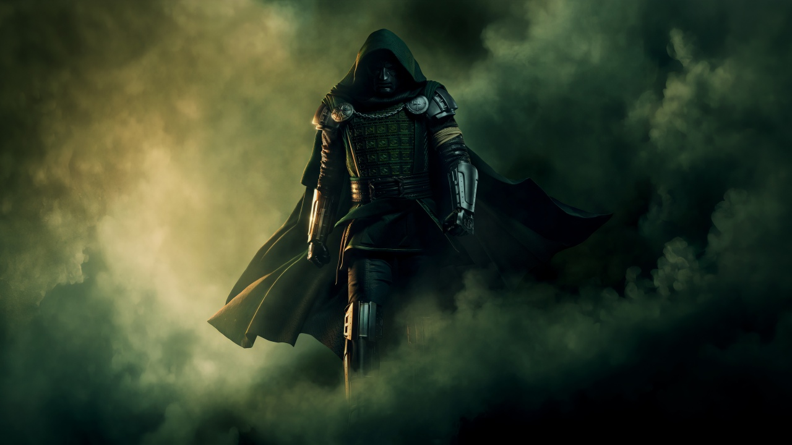
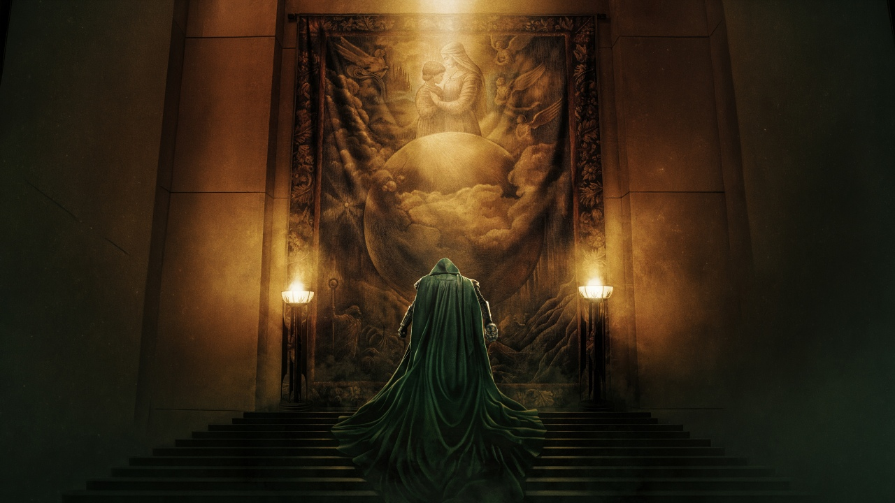

Introduction
Doctor Doom is a supervillain appearing in American comic books published by Marvel Comics. Created by writer-editor Stan Lee and artist Jack Kirby, the character first appeared in The Fantastic Four #5 (cover dated July 1962), with his full origin story following two years later in Fantastic Four Annual #2 (1964). Shortly after his creation, Doom became the archenemy of the Fantastic Four and one of Marvel's most widely used villains, appearing across titles including The Avengers, The Amazing Spider-Man, Iron Man, and Daredevil within his first decade.

Who is Doctor Doom?
Doctor Doom is the self-proclaimed moniker of Victor Werner von Doom, the monarch of the fictional European country of Latveria. Born to a Latverian healer and a Romani witch, Doom is a master of both science and sorcery, and seeks to bring order to humanity through world domination and prove his intellectual superiority over Mister Fantastic—his old college rival and the leader of the Fantastic Four—whom he blames for his disfigurement in a laboratory accident. Doom wears a metal mask to conceal his scarred face and a magically forged suit of armor that grants him superhuman strength, flight, and high-tech weaponry.
Powers and Tools
Doctor Doom does not have super strength like the Hulk, but he is still very dangerous. This is what he uses:
- Genius mind - he is one of the smartest people in the Marvel world and he can build almost any machine
- Magic - he learned sorcery as well as science
- Armor - it makes him strong, lets him fly and shoot energy blasts
- Doombots - robot copies of himself that fight in his place
- Latveria - as a ruler he has soldiers and many resources
What makes Doom different is that he mixes science and magic together. Most heroes and villains are good at only one of them.

Famous Dialogues
Famous dialogues from upcoming movie Avengers Doomsday
- "Hell answers to me… for I AM DOOM"
- "All of you have lived stolen lives. Now you must give them back."
Famous comics of Dr Doom
| Comic | Year |
|---|---|
| Fantastic Four #5 | 1962 |
| Marvel Super Heroes Secret Wars #1-12 | 1984 |
| Doctor Strange and Doctor Doom: Triumph and Torment | 1989 |
| Books of Doom #1-6 | 2005 |
| Secret Wars | 2015 |
Conclusion
To conclude, Doctor Doom is a villain with brains, magic, pride and a sad past. He is not a simple bad guy because he really believes he is right.
Thank you for reading my blog!